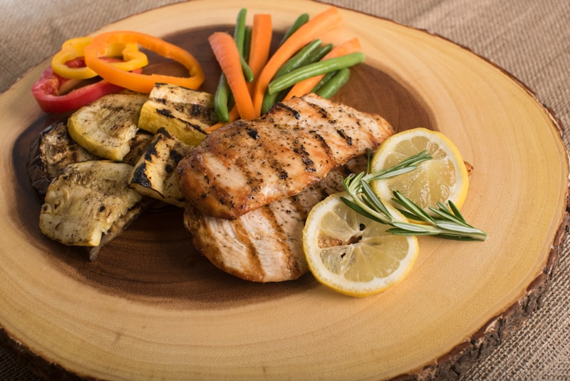
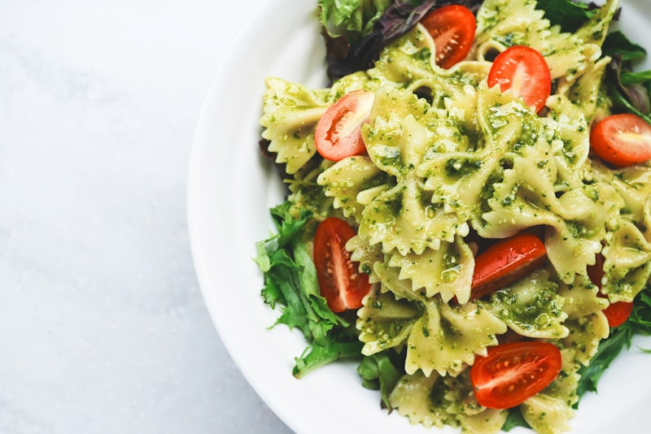
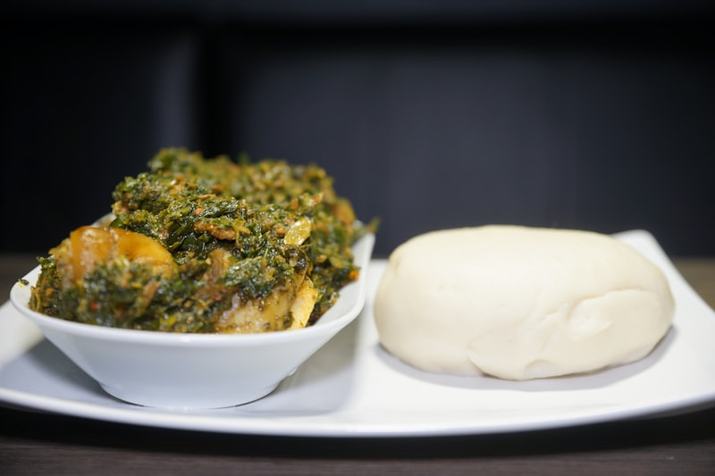
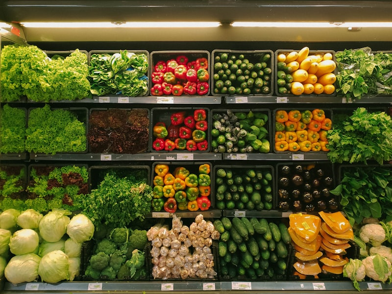

Tu Mapa de Alimentos Hormonales
Olvídate de las listas rígidas de "permitidos" y "prohibidos". Tu cuerpo no funciona así — y tu relación con la comida tampoco debería.
Esta guía usa un sistema de semáforo simple para que tomes decisiones inteligentes sin estrés:
🟢 VERDE — Prefiere (casi todos los días): Alimentos que estabilizan tus hormonas, nutren tu metabolismo y te dan energía sostenida.
🟡 AMARILLO — A veces (porciones pequeñas): Alimentos que puedes disfrutar con moderación, sin culpa, pero con consciencia.
🔴 ROJO — Evita o limita (raramente): Alimentos que provocan picos de insulina, inflamación o desbalance hormonal cuando se consumen con frecuencia.
Esto NO es una dieta de restricción. Es un mapa. Cada categoría de alimentos tiene opciones verdes que apoyan tu equilibrio hormonal — y la meta es hacer intercambios inteligentes, no pasar hambre ni sentir que te estás castigando.
Después de los 40, tus hormonas cambian. El estrógeno baja, la insulina se vuelve menos eficiente, y tu metabolismo necesita más apoyo. La buena noticia: lo que comes tiene un impacto directo en cómo funcionan tus hormonas. Cada elección en el supermercado, cada plato que armas, es una oportunidad de enviarle a tu cuerpo el mensaje correcto.
Usa esta guía como tu compañera de compras, tu consejera en la cocina y tu recordatorio de que comer bien no significa comer aburrido — significa comer con estrategia.

Bebidas — Lo que Tomas Importa Más
La mayoría de las mujeres subestiman el impacto de lo que beben. Una sola bebida azucarada puede provocar un pico de insulina más alto que un plato de comida completo, porque los líquidos llegan al torrente sanguíneo sin ningún freno. Este capítulo te muestra cómo hidratarte a favor de tus hormonas.
- 🟢 Agua natural — tu aliada #1, la única bebida que tu cuerpo realmente necesita para cada función metabólica
- 🟢 Agua con gas (sin azúcar ni saborizantes) — misma hidratación con una sensación más satisfactoria
- 🟢 Agua con limón — estimula la digestión y apoya la función del hígado, tu central de procesamiento hormonal
- 🟢 Té y café sin azúcar — la cafeína en dosis moderadas puede mejorar la sensibilidad a la insulina
- 🟢 Infusiones herbales (manzanilla, menta, hierbabuena) — hidratan sin calorías y reducen el cortisol
- 🟡 Refresco diet/cero — no tiene calorías, pero los edulcorantes artificiales pueden alterar tu microbiota intestinal
- 🟡 Leche vegetal sin azúcar (almendra, coco) — revisa la etiqueta, muchas traen azúcar escondida
- 🔴 Evita refrescos regulares — un solo vaso tiene 35-40g de azúcar, equivalente a 8 cucharaditas disparando tu insulina
- 🔴 Evita jugos comerciales, incluso los que dicen "100% natural" — sin la fibra de la fruta, son azúcar líquida
- 🔴 Evita tés listos embotellados — la mayoría contienen tanta azúcar como un refresco
- 🔴 Evita bebidas energéticas — combinan azúcar + cafeína excesiva, una receta para picos de cortisol e insulina
- INTERCAMBIO INTELIGENTE: Jugo en el almuerzo → agua natural + fruta entera de postre (ganas fibra, pierdes el pico)
- INTERCAMBIO INTELIGENTE: Refresco de la tarde → agua con gas + rodajas de limón y pepino
- ESTRATEGIA: Lleva siempre una botella de agua contigo — cuando tienes agua disponible, eliges agua
- 🟢 Té verde — rico en catequinas (EGCG) que activan la quema de grasa y mejoran la sensibilidad a la insulina
- 🟢 Té de jengibre — antiinflamatorio natural, acelera el metabolismo y mejora la digestión
- 🟢 Infusión de canela — ayuda a regular los niveles de glucosa y calma los antojos de dulce
- 🟢 Agua tibia con vinagre de manzana (1 cucharada en un vaso) — tomada antes de comer, reduce el pico de glucosa postcomida
- 🟢 Caldo de huesos — rico en colágeno, glutamina y minerales que reparan el intestino y apoyan la producción hormonal
- 🟢 Té de cúrcuma (golden milk sin azúcar) — antiinflamatorio que protege contra la resistencia a la insulina
- 🟡 Café con aceite de coco — aporta energía sostenida, pero cuida la porción de grasa si buscas bajar de peso
- TÉ VERDE: Prepáralo con agua a 80°C (no hirviendo) por 3 minutos — el agua muy caliente destruye las catequinas. Ideal en la mañana o temprano en la tarde
- TÉ DE JENGIBRE: Hierve 3-4 rodajas de jengibre fresco en 500ml de agua por 10 minutos. Puedes añadir limón al servir. Perfecto después de las comidas para mejorar la digestión
- INFUSIÓN DE CANELA: Hierve 1 rama de canela en 300ml de agua por 8 minutos. Tómala 20 minutos antes de una comida rica en carbohidratos
- VINAGRE DE MANZANA: Diluye 1 cucharada en un vaso grande de agua. Tómalo 15-20 minutos antes de comer. Nunca lo tomes solo — el ácido puede dañar el esmalte dental
- CALDO DE HUESOS: Cocina huesos de pollo o res con agua, vinagre de manzana, cebolla, ajo y sal por 12-24 horas a fuego bajo. Cuela y toma como sopa o como base para otras preparaciones
- ESTRATEGIA DIARIA: Mañana → té verde o café. Media mañana → agua con limón. Antes del almuerzo → agua con vinagre. Tarde → infusión de canela. Noche → manzanilla o jengibre

Proteínas — Tu Aliado #1
Después de los 40, tu cuerpo pierde masa muscular más rápido, tu metabolismo se desacelera y tus hormonas necesitan más materia prima para producirse. La proteína es la respuesta a los tres problemas. No se trata de comer como fisicoculturista — se trata de asegurar que cada comida tenga una fuente de proteína que trabaje a tu favor.
- 🟢 Huevos — la proteína más completa y económica. La yema contiene colina, esencial para la función hepática y hormonal
- 🟢 Pechuga de pollo o pavo — proteína magra con alto poder de saciedad y bajo impacto en la insulina
- 🟢 Pescado (salmón, tilapia, trucha, sardina) — el salmón y la sardina aportan omega-3 antiinflamatorio
- 🟢 Yogur griego natural (sin azúcar) — combina proteína + probióticos para tu salud intestinal
- 🟢 Cottage cheese (requesón) — alto en proteína, bajo en carbohidratos, versátil para cualquier comida
- 🟢 Legumbres (frijoles, lentejas, garbanzos) — proteína vegetal + fibra, una combinación ganadora
- 🟢 Tofu y tempeh — opciones vegetales con fitoestrógenos que apoyan el equilibrio hormonal en la menopausia
- 🟡 Carne roja magra — buena fuente de hierro y zinc, pero limita a 2-3 veces por semana en porciones moderadas
- 🔴 Evita embutidos y carnes procesadas (salchichas, jamón, salami, tocino) — son ultraprocesados cargados de sodio, nitratos y conservadores que promueven inflamación
- 🔴 Evita carnes empanizadas y fritas — el empanizado añade carbohidratos refinados y la fritura cambia la calidad de la grasa
- 🔴 Evita nuggets y hamburguesas procesadas — contienen más harina y relleno que proteína real
- MÉTODOS DE COCCIÓN 🟢: A la plancha, al horno, al vapor, hervido, en guiso con vegetales — todos conservan la proteína sin añadir grasa dañina
- INTERCAMBIO INTELIGENTE: Salchichas del desayuno → huevos revueltos con espinaca (más proteína, cero ultraprocesados)
- INTERCAMBIO INTELIGENTE: Nuggets de pollo → pechuga cortada en tiras, sazonada con hierbas y horneada (mismo sabor, nutrición real)
- 🟢 DESAYUNO: 2-3 huevos revueltos + espinaca + tomate — proteína completa que estabiliza tu glucosa hasta el almuerzo
- 🟢 MEDIA MAÑANA: Yogur griego natural + un puñado de nueces — proteína + grasa saludable = saciedad sin picos
- 🟢 ALMUERZO: Pechuga de pollo o pescado + quinoa + ensalada abundante — el trío perfecto de proteína + carbo inteligente + fibra
- 🟢 MEDIA TARDE: Huevo duro + palitos de zanahoria — snack con proteína que previene la caída energética de las 3-4 PM
- 🟢 CENA: Salmón o tilapia al horno + ensalada verde + aguacate — proteína + omega-3 + grasas buenas para reparación nocturna
- 🟢 OPCIÓN VEGETARIANA: Ensalada de lentejas con pimiento, tomate y aceite de oliva — proteína vegetal completa
- 🟡 SNACK RÁPIDO: Rollito de pechuga de pavo natural (no procesada) con pepino y mostaza — cuando necesitas algo rápido sin cocinar
- REGLA DE ORO: Incluye proteína en CADA comida y snack — nunca comas carbohidratos solos
- PASO 1: Al planificar cualquier comida, empieza por la proteína (¿qué proteína voy a incluir?)
- PASO 2: Agrega vegetales abundantes alrededor de tu proteína (mitad del plato)
- PASO 3: Completa con un carbohidrato inteligente en porción controlada (un cuarto del plato)
- TRUCO PARA NO SENTIRLO FORZADO: Cocina proteína en cantidad los domingos — pollo desmenuzado, huevos duros, frijoles — y tendrás proteína lista para agregar a cualquier comida entre semana
- ESTRATEGIA DE ORDEN: Come la proteína ANTES que los carbohidratos en cada comida — esto cambia completamente tu respuesta hormonal

Vegetales y Frutas
Los vegetales son probablemente el único grupo de alimentos donde puedes comer más sin preocuparte. Son ricos en fibra, minerales y antioxidantes con mínimo impacto en tu insulina. Las frutas también son tus aliadas — pero la forma en que las consumes marca toda la diferencia entre nutrir tu cuerpo o disparar tu glucosa.
- 🟢 Hojas verdes (espinaca, kale, lechuga, acelga, arúgula) — los más ricos en magnesio, hierro y ácido fólico
- 🟢 Brócoli y coliflor — crucíferos que apoyan la desintoxicación de estrógeno en el hígado
- 🟢 Pepino y apio — hidratantes naturales con casi cero impacto en la glucosa
- 🟢 Tomate — rico en licopeno, un antioxidante que protege tus células del estrés oxidativo
- 🟢 Calabacín (zucchini) — versátil, bajo en carbohidratos, perfecto como sustituto de pasta
- 🟢 Pimiento (chile morrón) — más vitamina C que una naranja, fortalece la producción de colágeno
- 🟢 Champiñones y berenjena — saciantes, ricos en fibra, absorben sabor de cualquier preparación
- 🟡 Vegetales con almidón (papa, yuca, camote, maíz, chícharos) — nutritivos pero con más carbohidratos, consume en porciones moderadas
- 🔴 Evita depender solo de vegetales con almidón como base de tus comidas — una papa grande tiene el mismo impacto glucémico que un plato de arroz
- 🔴 Evita vegetales fritos (tempura, aros de cebolla) — la fritura convierte un alimento verde en uno rojo
- MÉTODO DEL PLATO: Llena SIEMPRE la mitad de tu plato con vegetales sin almidón — esta sola estrategia transforma cualquier comida
- PREPARACIÓN RÁPIDA: Lava y corta tus vegetales el domingo para tenerlos listos toda la semana en contenedores en el refrigerador
- INTERCAMBIO INTELIGENTE: Puré de papa → puré de coliflor (misma textura cremosa, fracción de los carbohidratos)
- INTERCAMBIO INTELIGENTE: Papas fritas → bastones de camote al horno con romero (más fibra, liberación más lenta de glucosa)
- 🟢 Fresas, moras, arándanos, frambuesas — las frutas con menor índice glucémico y mayor cantidad de antioxidantes
- 🟢 Manzana (con cáscara) — la pectina de la cáscara forma un gel que atrapa azúcares y los libera lentamente
- 🟢 Pera — alta en fibra soluble, excelente para la digestión y la saciedad
- 🟢 Naranja y toronja — enteras (no en jugo), la fibra de los gajos controla la absorción de fructosa
- 🟢 Kiwi — dos kiwis tienen más vitamina C que una naranja y mejoran la digestión gracias a la actinidina
- 🟡 Plátano/banana — más almidón y azúcar que otras frutas, prefiere los menos maduros (más almidón resistente)
- 🟡 Mango, piña, sandía — índice glucémico más alto, disfrútalos en porciones pequeñas y siempre con proteína o grasa
- 🟡 Fruta seca (pasas, dátiles, arándanos secos) — azúcar concentrada, máximo 1 cucharada como topping
- 🔴 Evita reemplazar fruta entera por jugo — al licuar la fruta eliminas la fibra y conviertes la fructosa en azúcar libre
- 🔴 Evita fruta en almíbar o en conserva con azúcar añadida — es fruta ahogada en jarabe de glucosa
- 🔴 Evita smoothies comerciales o de tienda — pueden contener hasta 60g de azúcar en un solo vaso
- REGLA DE ORO: Siempre acompaña la fruta con proteína o grasa — manzana + crema de cacahuate, fresas + yogur griego, naranja + puñado de nueces
- CUÁNDO COMERLA: Después de una comida principal (como postre) es mejor que sola como snack — la comida previa frena el pico de glucosa
- CUÁNTO: 1-2 porciones al día es perfecto. Una porción = 1 fruta mediana o 1 taza de fruta picada

Carbohidratos Inteligentes
Los carbohidratos no son el enemigo. El problema es el TIPO de carbohidrato y la FORMA en que lo comes. Tu cuerpo necesita carbohidratos para producir serotonina, mantener la función tiroidea y tener energía. La clave está en elegir los que se absorben lentamente y combinarlos de forma inteligente para que trabajen a favor de tu metabolismo, no en contra.
- 🟢 Avena (hojuelas, no instantánea) — fibra beta-glucano que forma un gel en el intestino y estabiliza la glucosa por horas
- 🟢 Arroz integral — índice glucémico 48 vs 73 del arroz blanco, una diferencia que tu insulina nota inmediatamente
- 🟢 Quinoa — uno de los pocos carbohidratos que también es proteína completa, perfecto para el equilibrio hormonal
- 🟢 Camote/batata — rico en fibra y betacarotenos, se absorbe más lento que la papa blanca
- 🟢 Pan integral (de verdad) — el primer ingrediente debe ser "harina integral" o "grano entero", no "harina de trigo enriquecida"
- 🟢 Legumbres (frijoles, lentejas, garbanzos) — carbohidratos envueltos en fibra y proteína, la combinación ideal
- 🟡 Tortilla de maíz — mejor opción que pan blanco, pero controla la cantidad (2-3 por comida)
- 🟡 Pasta integral al dente — cocida al dente tiene menor índice glucémico que la pasta blanda, la textura importa
- 🔴 Reduce el arroz blanco — se convierte en glucosa casi tan rápido como el azúcar de mesa
- 🔴 Reduce el pan blanco y las harinas refinadas — la harina blanca es almidón puro sin fibra que lo frene
- 🔴 Evita cereales de caja azucarados — aunque digan "con vitaminas", son básicamente harina + azúcar + marketing
- 🔴 Evita galletas y bollería industrial — combinan harina refinada + azúcar + grasas trans, el trío que más inflama
- INTERCAMBIO INTELIGENTE: Arroz blanco → arroz integral o quinoa (misma función en el plato, respuesta hormonal completamente diferente)
- INTERCAMBIO INTELIGENTE: Pan blanco del desayuno → rodajas de camote tostado como base (más fibra, más nutrientes, menos pico)
- INTERCAMBIO INTELIGENTE: Pasta regular → fideos de calabacín o pasta integral al dente en porción controlada
- PASO 1 — FIBRA PRIMERO: Empieza cada comida con vegetales o ensalada (5 minutos comiendo esto antes de lo demás)
- PASO 2 — PROTEÍNA DESPUÉS: Sigue con tu fuente de proteína (pollo, pescado, huevos, legumbres)
- PASO 3 — GRASA JUNTO CON LA PROTEÍNA: El aceite de oliva, el aguacate o las nueces van naturalmente con este paso
- PASO 4 — CARBOHIDRATO AL FINAL: Ahora sí, come tu arroz, pan, papa o tortilla
- EJEMPLO ALMUERZO: Ensalada verde con tomate (primero) → pechuga a la plancha (segundo) → arroz integral con frijoles (al final)
- EJEMPLO CENA: Sopa de vegetales (primero) → salmón al horno (segundo) → camote en cubos (al final)
- EJEMPLO DESAYUNO: Espinaca salteada (primero) → huevos revueltos (segundo) → avena o tostada integral (al final)
- POR QUÉ FUNCIONA: Los vegetales crean una capa de fibra en tu estómago que actúa como una malla física
- LA PROTEÍNA SEGUNDO: Estimula hormonas de saciedad (GLP-1) que le dicen a tu cerebro "ya estoy satisfecha" antes de llegar al carbohidrato
- CARBOHIDRATO AL FINAL: Llega a un estómago que ya tiene fibra y proteína, así que la absorción es dramáticamente más lenta
- RESULTADO MEDIBLE: Este simple cambio de orden puede reducir el pico de glucosa después de comer entre un 30-40%, sin cambiar qué comes ni cuánto comes
- TRUCO PARA RESTAURANTES: Pide la ensalada como entrada (no como acompañamiento) y empieza por ella mientras esperas el plato fuerte
- NO NECESITAS SER PERFECTA: Si no puedes separar los pasos, al menos asegúrate de comer algunos bocados de vegetal y proteína antes de atacar el arroz o el pan

Grasas y Lácteos
Durante décadas nos dijeron que la grasa era la enemiga. Hoy sabemos que sin grasa saludable, tu cuerpo no puede producir hormonas sexuales, absorber vitaminas esenciales ni mantener tu cerebro funcionando. El problema nunca fue "la grasa" — fue el TIPO de grasa. Y con los lácteos, el peligro no está en la leche: está en todo el azúcar que le agregan.
- 🟢 Aceite de oliva extra virgen — antiinflamatorio, protege tu corazón y mejora la sensibilidad a la insulina
- 🟢 Aguacate — grasa monoinsaturada + fibra + potasio, el alimento más completo para tu perfil hormonal
- 🟢 Nueces y almendras — grasas buenas + proteína + magnesio. Un puñado diario (30g) protege tu metabolismo
- 🟢 Nueces de Brasil — la fuente natural más rica de selenio, mineral esencial para la función tiroidea (2-3 al día bastan)
- 🟢 Semillas (chía, linaza, calabaza) — omega-3 vegetal + fibra que alimenta tu microbiota y estabiliza hormonas
- 🟢 Pescados grasos (salmón, sardina, caballa) — omega-3 EPA y DHA que reducen la inflamación sistémica
- 🟡 Aceite de coco — útil para cocinar a alta temperatura, pero úsalo con moderación por su alto contenido de grasa saturada
- 🟡 Mantequilla y quesos — en porciones pequeñas aportan vitaminas liposolubles, pero no como fuente principal de grasa
- 🔴 Evita grasas trans (galletas rellenas, margarinas duras, algunos snacks empacados) — la grasa trans inflama tus células y empeora directamente la resistencia a la insulina
- 🔴 Evita el exceso de frituras — freír cambia la estructura química de los aceites, creando compuestos proinflamatorios
- 🔴 Evita aceites vegetales refinados en exceso (soya, canola, girasol) — su alto contenido de omega-6 promueve inflamación cuando se consume sin equilibrio
- INTERCAMBIO INTELIGENTE: Aderezos comerciales de ensalada → aceite de oliva + limón + sal + pimienta (más sano, más barato, más sabroso)
- INTERCAMBIO INTELIGENTE: Freír en aceite vegetal → cocinar al horno con un chorrito de aceite de oliva o al vapor
- ESTRATEGIA: Agrega una fuente de grasa buena a cada comida — medio aguacate, un chorrito de aceite de oliva, un puñado de nueces. Tu cuerpo la necesita para absorber vitaminas A, D, E y K
- 🟢 Yogur griego natural (sin azúcar, sin sabor) — alto en proteína + probióticos vivos que fortalecen tu intestino
- 🟢 Leche natural sin azúcar añadida — fuente de calcio y vitamina D, ambos esenciales para la salud ósea después de los 40
- 🟢 Cottage cheese (requesón) — alto en proteína caseína de absorción lenta, ideal para la cena o antes de dormir
- 🟢 Quesos maduros en moderación (parmesano, manchego) — ricos en calcio y prácticamente sin lactosa
- 🟢 Kéfir natural — más probióticos que el yogur, excelente para restaurar la flora intestinal
- 🟡 Queso fresco (panela, Oaxaca) — bajo en grasa pero revisa el sodio. Buena opción en porciones controladas
- 🟡 Crema ácida — úsala como complemento, no como base. Una cucharada añade sabor sin exceso
- 🔴 Evita yogures tipo "postre" (con mermelada, chocolate, galleta) — pueden tener más azúcar que un helado
- 🔴 Evita leches saborizadas y chocolatadas comerciales — un vaso puede contener 25-30g de azúcar añadida
- 🔴 Evita yogures de fruta comerciales — la "fruta" suele ser jarabe de maíz con saborizante y colorante
- INTERCAMBIO INTELIGENTE: Yogur de fresa comercial → yogur griego natural + fresas reales picadas + canela (controlas el azúcar, ganas proteína y probióticos)
- INTERCAMBIO INTELIGENTE: Leche chocolatada → leche natural + 1 cucharadita de cacao puro en polvo (sin azúcar)
- ESTRATEGIA: Lee siempre la etiqueta del yogur. Si el azúcar aparece entre los primeros 3 ingredientes, devuélvelo al estante

Snacks y Dulces
Los snacks son donde la mayoría de los planes alimenticios se desmoronan. No porque seas débil — sino porque llegas a las 3-4 PM con hambre real, energía baja, y lo más fácil de alcanzar es algo ultraprocesado. La solución no es "no comer entre comidas". Es tener las opciones correctas preparadas y entender cómo manejar los antojos de dulce sin culpa.
- 🟢 Nueces y almendras naturales (porción de 30g, un puñado) — grasa + proteína + fibra que te sostienen 2-3 horas sin picos
- 🟢 Yogur griego natural con semillas de chía — proteína + probióticos + fibra, el snack más completo
- 🟢 Palitos de zanahoria, pepino o jícama con guacamole — crujientes, frescos y con grasa buena que sacia
- 🟢 Palomitas de maíz caseras (con poco aceite y sal) — un snack de grano entero con fibra, sorprendentemente bajo en calorías
- 🟢 Huevo duro — la proteína más portátil que existe. Cocina varios el domingo y tenlos listos en el refrigerador
- 🟢 Manzana con crema de cacahuate natural (1 cucharada) — carbohidrato + grasa + proteína en cada bocado
- 🟡 Queso panela o cottage con rodajas de tomate — proteína + frescura, pero cuida la porción de queso
- 🟡 Edamames (frijoles de soya) con sal de mar — proteína vegetal satisfactoria, pero modera si tienes sensibilidad a la soya
- 🔴 Evita galletas rellenas (tipo sándwich) — la combinación de harina refinada + azúcar + grasa trans es lo que más dispara la insulina y la inflamación
- 🔴 Evita snacks salados ultraprocesados (papas fritas de bolsa, frituras de maíz) — diseñados para que no puedas parar de comer
- 🔴 Evita barras de granola dulces — la mayoría son golosinas disfrazadas con más azúcar que una galleta
- REGLA FUNDAMENTAL: Nunca comas un carbohidrato solo como snack — siempre combínalo con proteína o grasa. Galletas solas = pico. Galleta integral + queso = estabilidad
- ESTRATEGIA ANTI-CAÍDA DE ENERGÍA: Si regularmente tienes el bajón de las 3-4 PM, planifica tu snack de media tarde ANTES de que llegue el hambre
- PREPARACIÓN SEMANAL: Los domingos prepara bolsitas con porciones de nueces, corta palitos de vegetales y cocina huevos duros. Snacks saludables listos = decisiones fáciles
- 🟢 Chocolate oscuro 70%+ cacao — rico en flavonoides que mejoran la circulación y la sensibilidad a la insulina. 1-2 cuadritos satisfacen
- 🟢 Fruta fresca con yogur griego y canela — dulzura natural + proteína + el poder regulador de la canela
- 🟢 Banana congelada licuada ("helado" de banana) — textura cremosa de helado sin azúcar añadida. Agrega cacao en polvo para versión chocolate
- 🟢 Postres caseros con menos azúcar (reducir el azúcar de recetas a la mitad funciona en casi todo)
- 🟢 Dátiles rellenos de crema de cacahuate (1-2 piezas) — dulzura intensa + grasa + fibra que frena la absorción
- 🟡 Un trozo pequeño de pastel en ocasión especial (cumpleaños, celebración) — planificado, disfrutado, sin culpa
- 🟡 Gelatina sin azúcar con fruta fresca — no es nutritiva, pero satisface el antojo sin pico significativo
- 🔴 Evita comer dulce con el estómago vacío — sin fibra ni proteína previa, el azúcar llega directamente a tu sangre
- 🔴 Evita combinar postre + bebida azucarada — es una doble carga de azúcar que multiplica el pico de insulina
- 🔴 Evita "picotear" dulces durante todo el día — es mejor un momento consciente de dulce que 5 bocaditos inconscientes
- 🔴 Evita dulces como premio o consuelo emocional — crea un ciclo de dependencia hormonal difícil de romper
- REGLA DE ORO: Come tu dulce DESPUÉS de una comida completa (con fibra + proteína). El pico de glucosa se reduce dramáticamente comparado con comer el mismo dulce solo
- ESTRATEGIA ANTI-ANTOJO: Antojo de dulce → 1 cuadrito de chocolate oscuro + una taza de té de canela. El chocolate satisface, la canela estabiliza. Espera 15 minutos — el antojo casi siempre pasa

Trampas del Supermercado
La industria alimentaria invierte miles de millones en hacer que los productos ultraprocesados parezcan saludables. Palabras como "natural", "multigrano", "light" y "sin azúcar" son estrategias de marketing, no garantías de salud. Este capítulo te enseña a ver detrás del empaque y tomar decisiones informadas en cada pasillo del supermercado.
- ⚠️ Granola con azúcar — la mayoría de las granolas comerciales tienen más azúcar por porción que un cereal de chocolate para niños
- ⚠️ Açaí con jarabe y granola — el açaí puro es un superalimento, pero los tazones comerciales pueden tener 50-80g de azúcar
- ⚠️ Smoothies y jugos "detox" de tienda — un smoothie comercial puede contener más azúcar que un refresco grande
- ⚠️ Pan "multigrano" o "7 granos" — suena saludable, pero si el primer ingrediente es "harina de trigo enriquecida", es pan blanco disfrazado
- ⚠️ Productos "diet" o "light" — muchos reducen grasa pero aumentan azúcar para compensar el sabor
- ⚠️ Barritas de cereal "saludables" — revisa la etiqueta: muchas tienen 15-20g de azúcar, igual que una golosina
- ⚠️ Galletas "integrales" — a menudo son galletas regulares con un poco de salvado añadido y el mismo azúcar de siempre
- ⚠️ Yogur de fruta "con probióticos" — sí tiene probióticos, pero también 20-25g de azúcar que alimentan bacterias dañinas
- REGLA DE LOS PRIMEROS 3 INGREDIENTES: Lo que aparece primero en la lista es lo que más contiene el producto. Si azúcar, harina o jarabe están entre los primeros 3, es un producto azucarado disfrazado
- NOMBRES ESCONDIDOS DEL AZÚCAR: Jarabe de maíz, fructosa, maltodextrina, dextrosa, jarabe de agave, miel de maple, azúcar invertida — son todas azúcar con nombres diferentes
- MIRA CARBOHIDRATOS TOTALES: "Sin azúcar" no significa "sin carbohidratos". Muchos productos sin azúcar usan harinas y almidones que se convierten en glucosa igual
- REGLA DEL 5: Si la lista de ingredientes tiene más de 5 items que no reconoces o no podrías comprar en un mercado, piénsalo dos veces
- COMPARA POR PORCIÓN: Dos productos que parecen similares pueden tener porciones muy diferentes en la etiqueta. Siempre compara por 100g, no por "porción sugerida"
- ESTRATEGIA EN EL SÚPER: Compra principalmente en el perímetro de la tienda (frutas, vegetales, carnes, lácteos). Los pasillos centrales son territorio de ultraprocesados
- 🟢 Ajo, cebolla, limón — la base de sabor más poderosa y con cero azúcar añadida
- 🟢 Hierbas frescas (cilantro, perejil, albahaca, orégano) — sabor intenso, antioxidantes, sin calorías
- 🟢 Pimienta negra, comino, pimentón, chile en polvo — las especias no solo dan sabor, muchas son antiinflamatorias
- 🟢 Salsa de tomate casera (tomate + ajo + cebolla + hierbas) — tú controlas lo que lleva, sin azúcar ni conservadores
- 🟢 Aderezo de yogur natural (yogur + limón + hierbas + sal) — cremoso, proteico y sin el azúcar de los aderezos comerciales
- 🟢 Vinagre (de manzana, balsámico, de vino) — el ácido acético del vinagre realmente ayuda a reducir picos de glucosa
- 🟡 Mostaza — generalmente baja en azúcar, pero revisa la etiqueta de las versiones con miel
- 🟡 Salsa de soya — sin azúcar pero muy alta en sodio, usa la versión reducida en sodio con moderación
- 🔴 Limita la salsa BBQ (barbacoa) — una cucharada puede contener 6g de azúcar, más que una galleta
- 🔴 Limita salsas agridulces — son básicamente jarabe de maíz con saborizantes y colorantes
- 🔴 Limita el ketchup en exceso — 1 cucharada tiene 4g de azúcar. Dos cucharadas ya son 8g de azúcar pura
- 🔴 Evita aderezos comerciales cremosos (ranch, Caesar, mil islas) — combinan azúcar + aceites refinados + conservadores
- INTERCAMBIO INTELIGENTE: Salsa BBQ comercial → mezcla de salsa de tomate casera + un toque de vinagre de manzana + pimentón ahumado
- INTERCAMBIO INTELIGENTE: Aderezo cremoso comercial → aceite de oliva + limón + mostaza Dijon + sal y pimienta (listo en 30 segundos)
- DATO QUE SORPRENDE: Una salsa puede convertir una comida perfectamente saludable en una bomba de azúcar sin que te des cuenta. Siempre pregúntate: ¿qué le estoy echando encima?

Tu Guía de Compras
Todo lo que aprendiste en los capítulos anteriores se resume aquí: una guía práctica para el momento de la verdad — cuando estás en el supermercado con el carrito vacío y necesitas tomar 50 decisiones en 30 minutos. Una cocina bien abastecida es tu mejor defensa contra las decisiones impulsivas. Cuando la comida saludable está disponible, las elecciones saludables se vuelven fáciles.
- 🟢 VEGETALES: Espinaca, brócoli, coliflor, pepino, tomate, calabacín, pimiento, champiñones, lechuga, zanahoria, cebolla, ajo, apio, ejotes
- 🟢 FRUTAS: Fresas, moras, arándanos, manzanas, peras, naranjas, kiwi, limones (siempre de temporada, más frescas y económicas)
- 🟢 PROTEÍNAS: Huevos, pechuga de pollo, pescado (salmón, tilapia, sardina), pavo, legumbres secas (frijoles, lentejas, garbanzos), tofu
- 🟢 CARBOHIDRATOS INTELIGENTES: Avena en hojuelas, arroz integral, quinoa, camote, pan integral (verificado), tortilla de maíz
- 🟢 GRASAS SALUDABLES: Aceite de oliva extra virgen, aguacates, nueces, almendras, nueces de Brasil, semillas de chía, semillas de linaza, semillas de calabaza
- 🟢 LÁCTEOS: Yogur griego natural sin azúcar, leche natural, cottage cheese, kéfir
- 🟢 BEBIDAS: Té verde, jengibre fresco, canela en rama, manzanilla, vinagre de manzana
- 🟢 CONDIMENTOS: Cúrcuma, comino, pimienta negra, pimentón, orégano, hierbas frescas, mostaza Dijon, salsa de tomate sin azúcar
- REGLA DEL PERÍMETRO: Haz la mayoría de tus compras en las orillas de la tienda — ahí están los alimentos frescos (frutas, vegetales, carnes, lácteos). Los pasillos centrales están dominados por ultraprocesados
- NUNCA COMPRES CON HAMBRE: Cuando tienes hambre, tu cerebro busca calorías rápidas y tu carrito se llena de snacks ultraprocesados. Come algo con proteína antes de ir al súper
- PLANIFICA ANTES DE IR: Dedica 10 minutos a pensar tus comidas de la semana y haz tu lista. Ir sin lista = comprar por impulso
- COMPRA DE TEMPORADA: Las frutas y vegetales de temporada son más frescas, más nutritivas y más económicas. Pregunta en tu mercado local qué está en temporada
- LA REGLA DEL CARRITO VISUAL: Al final de tu compra, mira tu carrito. Si más de la mitad es empaquetado, reconsidera. Un carrito saludable tiene más colores naturales que empaques brillantes
- PREPARA AL LLEGAR: Apenas llegues a casa, lava y corta tus vegetales, cocina tus proteínas base y porciona tus nueces. 30 minutos de preparación = una semana de comidas fáciles
- 🟢 1/2 DEL PLATO — Vegetales sin almidón: Ensalada, brócoli, espinaca, calabacín, ejotes, tomate, pepino. Esta es la parte más grande y la más importante
- 🟢 1/4 DEL PLATO — Proteína: Pollo, pescado, huevos, tofu, legumbres, queso cottage. Tu fuente de saciedad y construcción muscular
- 🟢 1/4 DEL PLATO — Carbohidrato inteligente: Arroz integral, quinoa, camote, avena, pasta integral, tortilla de maíz. La energía que tu cuerpo necesita
- 🟢 AL LADO — Un vaso de agua: Siempre. No refresco, no jugo, no té endulzado. Agua natural o agua con gas
- 🟢 COMPLEMENTO — Una porción de grasa buena: Medio aguacate, un chorrito de aceite de oliva en la ensalada, o las nueces del snack anterior
- 🟢 POSTRE OPCIONAL — Una fruta entera o yogur natural: Si quieres algo dulce después, que sea real y en porción consciente
- DESAYUNO CON MÉTODO DEL PLATO: 1/2 plato = espinaca o tomate. 1/4 plato = huevos (2-3). 1/4 plato = avena o tostada integral. Agua o café sin azúcar al lado
- ALMUERZO CON MÉTODO DEL PLATO: 1/2 plato = ensalada mixta abundante. 1/4 plato = pechuga a la plancha o pescado. 1/4 plato = arroz integral o quinoa. Agua al lado
- CENA CON MÉTODO DEL PLATO: 1/2 plato = vegetales al vapor o ensalada. 1/4 plato = salmón, pollo o legumbres. 1/4 plato = camote o sopa de vegetales. Infusión de manzanilla al lado
- POR QUÉ FUNCIONA: No necesitas contar calorías, pesar alimentos ni usar aplicaciones. Tu plato se convierte en tu calculadora visual — la proporción correcta crea naturalmente el balance de macronutrientes que tu insulina necesita
- EN RESTAURANTES: Visualiza mentalmente el plato dividido. Pide ensalada extra si el plato viene con poca verdura. Lleva la mitad del carbohidrato para después si la porción es grande
- PARA TODA LA FAMILIA: Este método funciona para todos — no necesitas cocinar diferente. Simplemente ajusta las proporciones de cada sección según las necesidades de cada persona